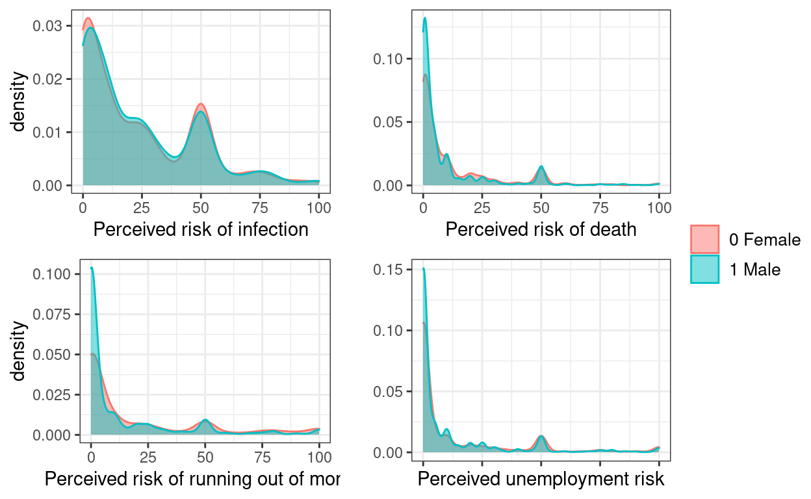
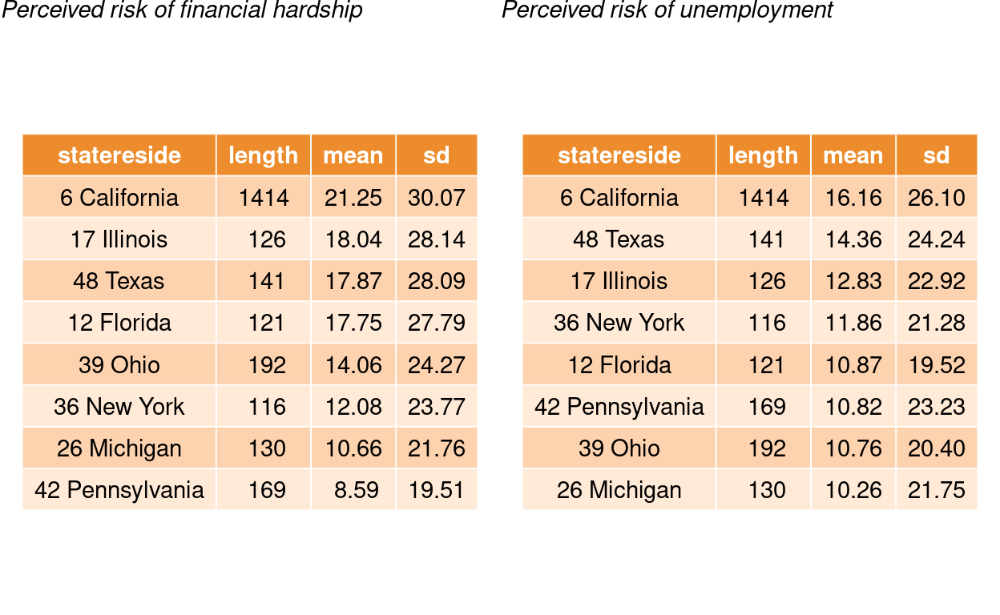
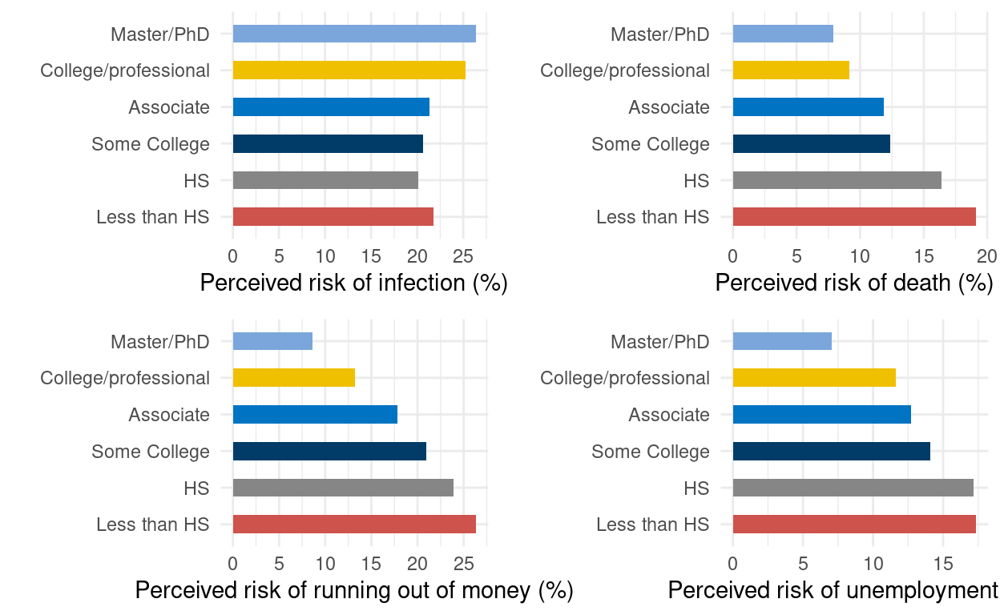
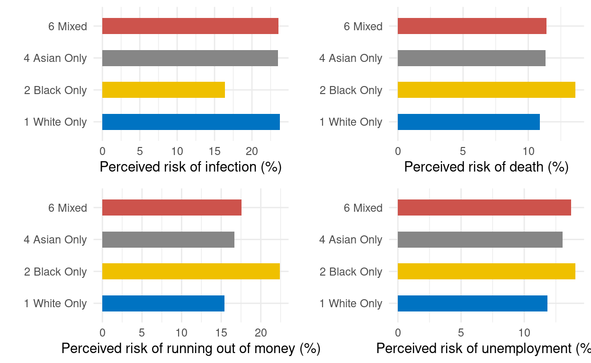
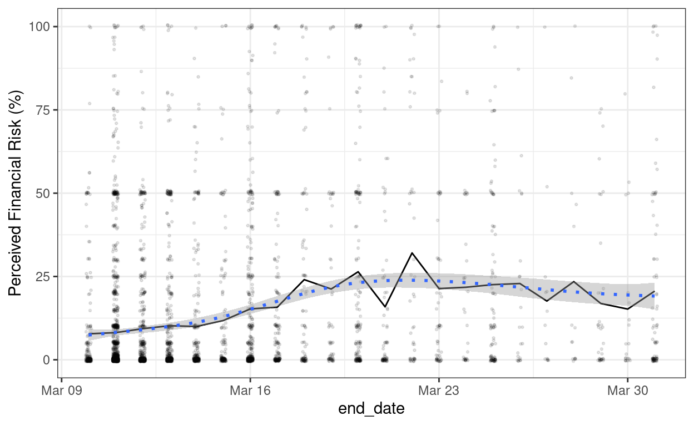

[Edit by ML: The styler package was used to style the code. ]
Introduction
As people in the US learned about the COVID-19 pandemic, their perceived risks related to infection, unemployment, and other risk factors have changed during the early month of the outbreak. In this post, we are interpreting a survey published by the University of Southern California by analyzing and comparing some key features related to risk factors.
Data preparation
Loading libraries
Loading data using here package
Data transformation
# Create a new dataframe contains only key demographic information and risk items
demo <- covid19 %>%
select(
statereside, gender, end_date, age, education, hhincome, race,
cr005, cr009, cr006, cr008a, end_date
)
demo <- na_if(demo, ".a") # question never seen by the respondents.
# S/he may skip over the question, or never
# view the question due to survey broke off.
demo <- na_if(demo, ".e") # .e -> questions that were asked but not answered
demo <- na_if(demo, ".c") # .c -> if respondent did not complete the survey
demo <- mutate_at(
demo, # convert data type to numeric data
vars(cr006, cr005, cr009, cr008a, age),
as.numeric
)
demo <- na.omit(demo)
Gender
- 58.6% of the respondents are female.
- Male and Female have a similar belief in how infectious Coronavirus is.
- More male respondents are very optimistic about the risks related to Coronavirus.
gen <- demo %>%
group_by(gender) %>%
dplyr::summarise(g = n())
ggplot(gen, aes(x = gender, y = g, fill = gender)) + # Barplot of gender distribution with annotation
geom_col() +
geom_label(aes(label = g)) +
labs(x = "Gender", y = "Count") +
scale_fill_jco() + # jco palette
coord_flip() +
theme_bw() +
theme(legend.position = "none")
gender_inf <- demo %>% # Plot perceived infection risk
select(gender, cr005) %>%
ggplot(aes(x = cr005, color = gender, fill = gender)) +
geom_density(alpha = 0.5) +
theme_bw() +
theme(legend.title = element_blank(), legend.text = element_text(size = 10)) +
labs(x = "Perceived risk of infection")
gender_death <- demo %>% # Plot perceived risk of death
select(gender, cr006) %>%
ggplot(aes(x = cr006, color = gender, fill = gender)) +
geom_density(alpha = 0.5) +
theme_bw() +
theme(legend.title = element_blank(), legend.text = element_text(size = 10)) +
labs(x = "Perceived risk of death", y = "")
gender_unemploy <- demo %>% # Plot perceived unemployment risk
select(gender, cr008a) %>%
ggplot(aes(x = cr008a, color = gender, fill = gender)) +
geom_density(alpha = 0.5) +
theme_bw() +
theme(legend.title = element_blank(), legend.text = element_text(size = 10)) +
labs(x = "Perceived unemployment risk", y = "")
gender_finance <- demo %>% # Plott perceived risk of running out of money
select(gender, cr009) %>%
ggplot(aes(x = cr009, color = gender, fill = gender)) +
geom_density(alpha = 0.5) +
theme_bw() +
theme(legend.title = element_blank(), legend.text = element_text(size = 10)) +
labs(x = "Perceived risk of running out of money")
ggarrange(gender_inf, gender_death, gender_finance, gender_unemploy + rremove("x.text"), # Combining gender and risk items in one plot
common.legend = TRUE, legend = "right",
ncol = 2, nrow = 2
)

Age
- Most respondents are between age 30 to age 60.
- Younger respondents have a higher estimate chance of infection, but a lower estimate chance of death related to Coronavirus.
- Elderly respondents have a lower perceived unemployment risk and financial risk related to coronavirus.
[Two graphs below are edited by ML]
ggplot(demo, aes(x = age)) +
geom_histogram(binwidth = 10, alpha = 0.85, fill = "deepskyblue3", color = "white") +
theme_minimal() +
labs(x = "Age", y = "Count") +
scale_x_continuous(breaks = seq(0, 100, by = 10)) +
scale_y_continuous(breaks = seq(0, 1400, by = 200))
ggplot(data = demo) + # combined plot 1
geom_point(
mapping = aes(x = age, y = cr005, color = "Perceived Risk of Infection"),
alpha = 0.1, size = 0.5
) +
geom_point(
mapping = aes(x = age, y = cr006, color = "Perceived Risk of Death"),
alpha = 0.1, size = 0.5
) +
geom_smooth(mapping = aes(x = age, y = cr005, color = "Perceived Risk of Infection")) +
geom_smooth(mapping = aes(x = age, y = cr006, color = "Perceived Risk of Death")) +
labs(y = "Perceived Risk (%)", x = "Age") +
theme_bw() +
theme(legend.title = element_blank(), legend.text = element_text(size = 10)) +
scale_x_continuous(breaks = seq(0, 100, by = 10))
ggplot(data = demo) + # combined plot 2
geom_point(
mapping = aes(x = age, y = cr008a, color = "Perceived Unemployment Risk"),
alpha = 0.1, size = 0.5
) +
geom_point(
mapping = aes(x = age, y = cr009, color = "Perceived Financial Risk"),
alpha = 0.1, size = 0.5
) +
geom_smooth(mapping = aes(x = age, y = cr008a, color = "Perceived Unemployment Risk")) +
geom_smooth(mapping = aes(x = age, y = cr009, color = "Perceived Financial Risk")) +
labs(y = "Perceived Risk (%)", x = "Age") +
theme_bw() +
theme(legend.title = element_blank(), legend.text = element_text(size = 10)) +
scale_x_continuous(breaks = seq(15, 95, by = 10))

Residence
- The number of respondents from California is significantly higher than number of respondents from any other states.
- Respondents in New York, Pennsylvania, and Michigan report a lower perceived fianancial risk related to Coronavirus.
- While respondents in California, Illnois, and Texas report a higher perceived unemployment risk and financial risk related to Coronavirus.
[ML: Interestingly, it looks like Californian perceived higher risks consistently than those in other states.]
demo_state <- demo %>% # add counts for each state:
add_count(statereside, name = "n") %>% # use New York as cutline, filter out 8 states with n >= 115
filter(n >= 115)
reside <- demo_state %>%
group_by(statereside) %>%
dplyr::summarise(re = n())
ggplot(reside, aes(x = statereside, y = re, fill = statereside)) + # Barplot of gender distribution with annotation
geom_col() +
geom_label(aes(label = re), fill = "white") +
labs(x = "State Reside", y = "Count") +
scale_fill_jco() +
coord_flip() +
theme_bw() +
theme(legend.position = "none")
death_state <- ggplot(demo_state, aes(x = cr006, fill = statereside)) + # Plot perceived risk of death
geom_density(alpha = 0.3) +
theme_minimal() +
labs(y = "", x = "Perceived risk of death") +
theme_bw() +
theme(legend.title = element_blank(), legend.text = element_text(size = 10))
inf_state <- ggplot(demo_state, aes(x = cr005, fill = statereside)) + # Plot perceived risk of infection
geom_density(alpha = 0.3) +
theme_minimal() +
labs(x = "Perceived risk of infection") +
theme_bw() +
theme(legend.title = element_blank(), legend.text = element_text(size = 10))
finance_state <- ggplot(demo_state, aes(x = cr009, fill = statereside)) + # Plot perceived financial risk
geom_density(alpha = 0.3) +
theme_minimal() +
labs(y = "", x = "Perceived financial risk") +
theme_bw() +
theme(legend.title = element_blank(), legend.text = element_text(size = 10))
unemploy_state <- ggplot(demo_state, aes(x = cr008a, fill = statereside)) + # Plot perceived unemployment risk
geom_density(alpha = 0.3) +
theme_minimal() +
labs(x = "Perceived unemployment risk") +
theme_bw() +
theme(legend.title = element_blank(), legend.text = element_text(size = 10))
ggarrange(inf_state, death_state, finance_state, unemploy_state, # combine the plots
common.legend = TRUE, legend = "right",
ncol = 2, nrow = 2
)
finance_state_stat <- desc_statby(demo_state, measure.var = "cr009", grps = "statereside") # Summary table for perceived risk of financial hardship by states
finance_state_stat <- finance_state_stat[, c("statereside", "length", "mean", "sd")] %>%
arrange(-mean) # sort by mean in decending order
finance_state_stat$mean <- round(finance_state_stat$mean, 2) # round to 2 decimal places
finance_state_stat$sd <- round(finance_state_stat$sd, 2)
finance_state_stat <- ggtexttable(finance_state_stat,
rows = NULL,
theme = ttheme("mOrange")
) # Summary table plot, medium orange theme
unemploy_state_stat <- desc_statby(demo_state, measure.var = "cr008a", grps = "statereside") # Summary table for perceived risk of unemployment by states
unemploy_state_stat <- unemploy_state_stat[, c("statereside", "length", "mean", "sd")] %>%
arrange(-mean)
unemploy_state_stat$mean <- round(unemploy_state_stat$mean, 2) # round to 2 decimal places
unemploy_state_stat$sd <- round(unemploy_state_stat$sd, 2)
unemploy_state_stat <- ggtexttable(unemploy_state_stat,
rows = NULL,
theme = ttheme("mOrange")
)
text_2 <- paste("Perceived risk of unemployment", sep = " ") # Create text to annotate summary tables
text_1 <- paste("Perceived risk of financial hardship", sep = " ")
text.p1 <- ggparagraph(text = text_1, face = "italic", size = 11, color = "black")
text.p2 <- ggparagraph(text = text_2, face = "italic", size = 11, color = "black")
ggarrange(text.p1, text.p2, finance_state_stat, unemploy_state_stat, # combine the plots
heights = c(0.1, 2),
ncol = 2, nrow = 2
)

Education
- Respondents with a higher education degree report a higher perceived risk of infection, but lower perceived risk of death.
- Respondents with a lower educaton degree report a higher perceived unemployment risk and financial risk.
demo <- demo %>% # recode education level into more organzied groups
mutate(tidyEdu = recode(education,
`1 Less than 1st grade` = "Less than HS",
`10 Some college-no degree` = "Some College",
`11 Assoc. college degree-occ/voc prog` = "Associate",
`12 Assoc. college degree-academic prog` = "Associate",
`13 Bachelor's degree` = "College/professional",
`14 Master's degree` = "Master/PhD",
`15 Professional school degree` = "College/professional",
`16 Doctorate degree` = "Master/PhD",
`2 Up to 4th grade` = "Less than HS",
`3 5th or 6th grade` = "Less than HS",
`4 7th or 8th grade` = "Less than HS",
`5 9th grade` = "Less than HS",
`6 10th grade` = "Less than HS",
`7 11th grade` = "Less than HS",
`8 12th grade-no diploma` = "Less than HS",
`9 High school graduate or GED` = "HS"
))
edu <- demo %>%
group_by(tidyEdu) %>%
dplyr::summarise(e = n())
ggplot(edu, aes(x = tidyEdu, y = e, fill = tidyEdu)) + # Barplot of education distribution with annotation
geom_col() +
geom_label(aes(label = e), fill = "white") +
labs(x = "Education", y = "Count") +
scale_fill_jco() +
coord_flip() +
theme_bw() +
theme(legend.position = "none") +
scale_x_discrete(limits = c("Less than HS", "HS", "Some College", "Associate", "College/professional", "Master/PhD")) # fixed order
# summarize basic statistic using Rmisc package
vis_death <- summarySE(demo, measurevar = "cr006", groupvars = c("tidyEdu"))
edu_2 <- ggplot(vis_death, aes(x = tidyEdu, y = cr006, fill = tidyEdu)) + # Plot Perceived risk of death
geom_bar(stat = "identity", width = .5) +
scale_fill_jco() +
theme_minimal() +
coord_flip() +
labs(x = "", y = "Perceived risk of death (%)") +
scale_x_discrete(limits = c("Less than HS", "HS", "Some College", "Associate", "College/professional", "Master/PhD")) +
scale_y_continuous(breaks = seq(0, 30, by = 5))
vis_inf <- summarySE(demo, measurevar = "cr005", groupvars = c("tidyEdu")) # Plot Perceived risk of infection
edu_1 <- ggplot(vis_inf, aes(x = tidyEdu, y = cr005, fill = tidyEdu)) +
geom_bar(stat = "identity", width = .5) +
theme_minimal() +
scale_fill_jco() +
coord_flip() +
labs(x = "", y = "Perceived risk of infection (%)") +
scale_x_discrete(limits = c("Less than HS", "HS", "Some College", "Associate", "College/professional", "Master/PhD")) +
scale_y_continuous(breaks = seq(0, 30, by = 5))
# Perceived unemployment risk (cr008a) by education
vis_umemploy <- summarySE(demo, measurevar = "cr008a", groupvars = c("tidyEdu"))
edu_4 <- ggplot(vis_umemploy, aes(x = tidyEdu, y = cr008a, fill = tidyEdu)) + # Plot Perceived risk of unemployment
geom_bar(stat = "identity", width = .5) +
coord_flip() +
scale_fill_jco() +
theme_minimal() +
labs(x = "", y = "Perceived risk of unemployment (%)") +
scale_x_discrete(limits = c("Less than HS", "HS", "Some College", "Associate", "College/professional", "Master/PhD")) +
scale_y_continuous(breaks = seq(0, 30, by = 5))
# Perceived financial risk (cr009) by education
vis_financial <- summarySE(demo, measurevar = "cr009", groupvars = c("tidyEdu"))
edu_3 <- ggplot(vis_financial, aes(x = tidyEdu, y = cr009, fill = tidyEdu)) + # Plot Perceived risk of running out of money
geom_bar(stat = "identity", width = .5) +
coord_flip() +
scale_fill_jco() +
theme_minimal() +
labs(x = "", y = "Perceived risk of running out of money (%)") +
scale_x_discrete(limits = c("Less than HS", "HS", "Some College", "Associate", "College/professional", "Master/PhD")) +
scale_y_continuous(breaks = seq(0, 30, by = 5))
ggarrange(edu_1, edu_2, edu_3, edu_4, # Combine plots
common.legend = TRUE, legend = "none",
ncol = 2, nrow = 2
)

Income
- High income respondents report a higher perceived risk of infection, but a lower perceived risk of death.
- Low income respondents report a higher perceived unemployment risk and financial risk.
demo <- demo %>%
mutate(incomeTidy = recode(hhincome,
`1 Less than $5,000` = "under 20k",
`3 7,500 to 9,999` = "under 20k",
`2 5,000 to 7,499` = "under 20k",
`4 10,000 to 12,499` = "under 20k",
`5 12,500 to 14,999` = "under 20k",
`6 15,000 to 19,999` = "under 20k",
`7 20,000 to 24,999` = "20-39k",
`8 25,000 to 29,999` = "20-39k",
`9 30,000 to 34,999` = "20-39k",
`10 35,000 to 39,999` = "20-39k",
`11 40,000 to 49,999` = "40-59k",
`12 50,000 to 59,999` = "40-59k",
`13 60,000 to 74,999` = "60-74k",
`14 75,000 to 99,999` = "75-99k",
`15 100,000 to 149,999` = "100-149k",
`16 150,000 or more` = "150k plus"
))
temp_inc <- demo %>%
select(incomeTidy) %>%
group_by(incomeTidy) %>%
dplyr::summarise(cnt = n())
ggplot(temp_inc, aes(x = incomeTidy, y = cnt, fill = incomeTidy)) +
geom_col() +
geom_label(aes(label = cnt), fill = "white") +
labs(x = "Income", y = "Count") +
scale_fill_jco() +
theme_bw() +
coord_flip() +
theme(legend.position = "none") +
scale_x_discrete(limits = c("under 20k", "20-39k", "40-59k", "60-74k", "75-99k", "100-149k", "150k plus"))
# Perceived risk of infection (cr005) by Income
inc_infection <- summarySE(demo, measurevar = "cr005", groupvars = c("incomeTidy"))
inc_1 <- ggplot(inc_infection, aes(x = incomeTidy, y = cr005, fill = incomeTidy)) +
geom_bar(stat = "identity", width = .5) +
theme_minimal() +
scale_fill_jco() +
coord_flip() +
labs(x = "", y = "Perceived risk of infection (%)") +
scale_x_discrete(limits = c("under 20k", "20-39k", "40-59k", "60-74k", "75-99k", "100-149k", "150k plus"))
# Perceived risk of death (cr006) by Education
inc_death <- summarySE(demo, measurevar = "cr006", groupvars = c("incomeTidy"))
inc_2 <- ggplot(inc_death, aes(x = incomeTidy, y = cr006, fill = incomeTidy)) +
geom_bar(stat = "identity", width = .5) +
theme_minimal() +
coord_flip() +
scale_fill_jco() +
labs(x = "", y = "Perceived risk of death (%)") +
scale_x_discrete(limits = c("under 20k", "20-39k", "40-59k", "60-74k", "75-99k", "100-149k", "150k plus"))
# Perceived unemployment risk (cr008a) by Income
inc_unemploy <- summarySE(demo, measurevar = "cr008a", groupvars = c("incomeTidy"))
inc_4 <- ggplot(inc_unemploy, aes(x = incomeTidy, y = cr008a, fill = incomeTidy)) +
geom_bar(stat = "identity", width = .5) +
theme_minimal() +
coord_flip() +
scale_fill_jco() +
labs(x = "", y = "Perceived risk of unemployment (%)") +
scale_x_discrete(limits = c("under 20k", "20-39k", "40-59k", "60-74k", "75-99k", "100-149k", "150k plus"))
# Perceived financial risk (cr009) by Income
inc_unemploy <- summarySE(demo, measurevar = "cr009", groupvars = c("incomeTidy"))
# Create visualization, order the bar by education level
inc_3 <- ggplot(inc_unemploy, aes(x = incomeTidy, y = cr009, fill = incomeTidy)) +
geom_bar(stat = "identity", width = .5) +
theme_minimal() +
coord_flip() +
scale_fill_jco() +
labs(x = "", y = "Perceived risk of running out of money (%)") +
scale_x_discrete(limits = c("under 20k", "20-39k", "40-59k", "60-74k", "75-99k", "100-149k", "150k plus"))
ggarrange(inc_1, inc_2, inc_3, inc_4,
common.legend = TRUE, legend = "none",
ncol = 2, nrow = 2
)

Race
- Compare to other races, Black American reported a lower perceived risk of infection, but a higher perceived financial risk, and perceived risk of death.
race_total <- demo %>%
select(race) %>%
group_by(race) %>%
filter(race %in% c("1 White Only", "2 Black Only", "4 Asian Only", "6 Mixed")) %>%
dplyr::summarise(r = n())
# Plot race distribution with annotation
ggplot(race_total, aes(x = race, y = r, fill = race)) +
geom_col() +
geom_label(aes(label = r), fill = "white") +
labs(x = "Race", y = "Count") +
scale_fill_jco() +
coord_flip() +
theme_bw() +
theme(legend.position = "none")
# filter out the racial groups n >200
demo_race <- demo %>%
select(race, cr005, cr006, cr008a, cr009) %>%
filter(race %in% c("1 White Only", "2 Black Only", "4 Asian Only", "6 Mixed"))
# Perceived risk of infection (cr005) by Race
race_infection <- summarySE(demo_race, measurevar = "cr005", groupvars = c("race"))
race_1 <- ggplot(race_infection, aes(x = race, y = cr005, fill = race)) +
geom_bar(stat = "identity", width = .5) +
theme_minimal() +
coord_flip() +
scale_fill_jco() +
labs(x = "", y = "Perceived risk of infection (%)")
# Perceived risk of death (cr006) by Race
race_death <- summarySE(demo_race, measurevar = "cr006", groupvars = c("race"))
race_2 <- ggplot(race_death, aes(x = race, y = cr006, fill = race)) +
geom_bar(stat = "identity", width = .5) +
theme_minimal() +
coord_flip() +
scale_fill_jco() +
labs(x = "", y = "Perceived risk of death (%)")
# Perceived unemployment risk (cr008a) by Race
race_unemploy <- summarySE(demo_race, measurevar = "cr008a", groupvars = c("race"))
race_4 <- ggplot(race_unemploy, aes(x = race, y = cr008a, fill = race)) +
geom_bar(stat = "identity", width = .5) +
theme_minimal() +
coord_flip() +
scale_fill_jco() +
labs(x = "", y = "Perceived risk of unemployment (%)")
# Perceived financial risk (cr009) by Race
race_finance <- summarySE(demo_race, measurevar = "cr009", groupvars = c("race"))
race_3 <- ggplot(race_finance, aes(x = race, y = cr009, fill = race)) +
geom_bar(stat = "identity", width = .5) +
theme_minimal() +
coord_flip() +
scale_fill_jco() +
labs(x = "", y = "Perceived risk of running out of money (%)")
ggarrange(race_1, race_2, race_3, race_4,
common.legend = TRUE, legend = "none",
ncol = 2, nrow = 2
)

Time
- Perceived financial risk and unemployment risk appear to peak at the late March, within the timeframe of this survey.
- An increasing perceived risk of infection and death related to Coronavirus were noted during March, 2020.
demo$end_date <- as.Date(demo$end_date, format = "%d%b%Y") # convert date to the right format
time_stat <- demo %>% # Calculate daily average value for each risk items to create line chart
select(cr005, cr006, cr009, cr008a, end_date) %>%
group_by(end_date) %>%
dplyr::summarise(n = n(), infection = mean(cr005), death = mean(cr006), unemployment = mean(cr008a), financial = mean(cr009))
t1 <- ggplot(data = time_stat) + # Line chart 1
geom_line(aes(end_date, infection, color = "Perceived risk of infection")) +
geom_line(aes(end_date, death, color = "Perceived risk of death")) +
theme_bw() +
theme(legend.title = element_blank(), legend.text = element_text(size = 10)) + # hide legend text, and adjust legend font size
labs(y = "Perceived Risk (%)", x = "Survey Date")
t2 <- ggplot(data = time_stat) +
geom_line(aes(end_date, financial, color = "Perceived financial risk")) + # Line chart2
geom_line(aes(end_date, unemployment, color = "Perceived unemployment risk")) +
theme_bw() +
theme(legend.title = element_blank(), legend.text = element_text(size = 10)) +
labs(y = "Perceived Risk (%)", x = "Survey Date")
t3 <- ggplot(demo) +
geom_smooth(aes(end_date, cr005, color = "Perceived financial risk")) + # geom_smooth plot 1
geom_smooth(aes(end_date, cr006, color = "Perceived risk of death")) +
theme_bw() +
labs(y = "", x = "Survey Date")
t4 <- ggplot(demo) +
geom_smooth(aes(end_date, cr008a, color = "Perceived unemployment risk")) + # geom_smooth plot 1
geom_smooth(aes(end_date, cr009, color = "Perceived financial risk")) +
theme(legend.title = element_blank(), legend.text = element_text(size = 10)) +
theme_bw() +
labs(y = "", x = "Survey Date")
t5 <- ggplot(demo, aes(end_date, cr005)) +
geom_jitter(size = 1) +
theme_bw() +
geom_smooth() +
labs(x = "")
t6 <- ggplot(demo, aes(end_date, cr006)) +
geom_jitter(size = 1) +
theme_bw() +
geom_smooth() +
labs(x = "")
t7 <- ggplot(demo, aes(end_date, cr008a)) +
geom_jitter(size = 1) +
theme_bw() +
geom_smooth()
t8 <- ggplot(demo, aes(end_date, cr009)) +
geom_jitter(size = 1) +
theme_bw() +
geom_smooth()
ggarrange(t1, t3,
ncol = 2, nrow = 1,
common.legend = TRUE, legend = "top"
)
ggarrange(t2, t4,
ncol = 2, nrow = 1,
common.legend = TRUE, legend = "top"
)
# ggarrange(t5, t6,t7, t8,
# ncol = 2, nrow = 2,
# common.legend = TRUE, legend = "top")
[The graph below is added by ML]
# Edit by ML: Showing the variability in responses across time
ggplot(
demo,
aes(end_date, cr008a)
) +
geom_jitter(width = 0.1, height = 0.5, alpha = 0.1, size = 0.5) +
stat_summary(fun = mean, geom = "line") +
theme_bw() +
geom_smooth(linetype = "dotted") +
labs(y = "Perceived Financial Risk (%)")

Summary
The survey was conducted in the early month of the COVID-19 outbreak in the US. There was a large variation in how people evaluate risks related to Coronavirus, but the findings suggested that people perception of risks experienced a significant increase compare to the beginning of the survey.
Publication Statement
The analysis described in this page relies on data from survey(s) administered by the Understanding America Study, which is maintained by the Center for Economic and Social Research (CESR) at the University of Southern California. The content of this page is solely the responsibility of the authors and does not necessarily represent the official views of USC or UAS. Journalists and other reporters must refer readers to methodology information available at <uasdata.usc.edu> or election.uas.edu as appropriate.